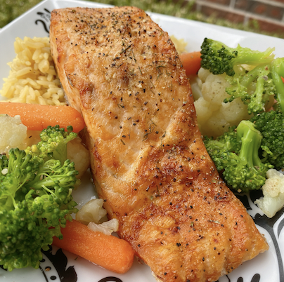

Air Fryer Salmon

Description
Did you know an air fryer can do more than just crisp and lend a healthier version of fried food? I decided to cook salmon in mine, and was amazed by the results! Serve with vegetables and rice pilaf if desired.
Ingredients
- 1 (6 ounce) salmon fillet
- ½ teaspoon salt
- ½ teaspoon Greek seasoning (such as Cavender's®)
- ¼ teaspoon ground black pepper
- 1 pinch dried dill weed
Steps
- Preheat the air fryer to 370 degrees F (190 degrees C) for 5 minutes.
- Meanwhile, season salmon fillet with salt, Greek seasoning, pepper, and dill.
- Line the inner basket of the air fryer with a perforated parchment round. Place salmon onto the parchment, skin side down.
- Air fry salmon until salmon is cooked through, about 15 minutes.